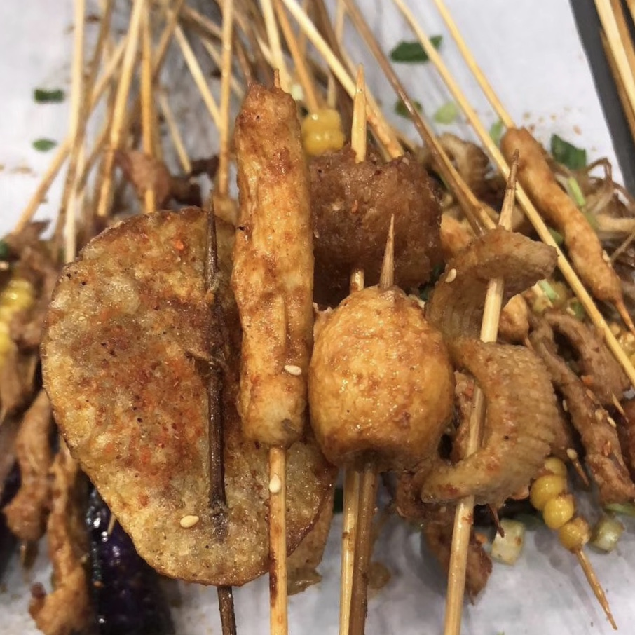

油炸串串也叫长药油炸、乐山油炸、油炸串串香，是一种源自乐山的地方风味小吃。油炸串串形式与烧烤类似，区别在于烹饪方式，油炸串串是"炸"制而成。
油炸串串起源于乐山，乐山位于川南偏西，盛产毛竹等竹子，民间自古有用竹签串制食材的习惯，串串便是用毛竹签制而成。改革开放以后，串串小摊、小店成为乐山街头一大特色，油炸串串便是其中一种。

"油炸"是川渝地区一种有代表性的烹饪方式，乐山另一著名小吃"狼牙土豆"便是油炸而成。川渝地区对油炸这一烹饪手段比较了解，外地游客却不甚明白，因串串早已名声在外，因而部分商家又打出油炸串串香的招牌。 油炸串串以其独特的风味、凭借乐山旅游城市的优势迅速走红，成为乐山串串小吃中的新兴强势流派，与乐山钵钵鸡、牛华麻辣烫、乐山烧烤并列为"乐山四大名串"。